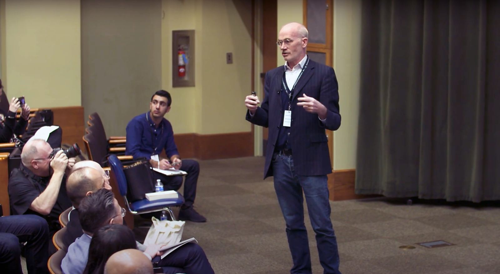

AI Strategy & Digital Transformation
How organizations build the resilience to absorb successive technology waves — and why culture and data assets matter more than algorithms.
Berkeley · Stanford · HEC Paris
Gregory La Blanc has guided AI and digital transformation with executives at 100+ companies and governments worldwide — and teaches the strategy behind it at UC Berkeley, Stanford, and HEC Paris.
01 About
For the past decade, Greg's work has centered on one question: how do organizations absorb AI and emerging technology — and turn it into advantage?
His academic home is UC Berkeley's College of Engineering, where he is Faculty Director of Professional Education and a Lecturer in EECS. He also teaches at Berkeley Haas — where he is a Distinguished Teaching Fellow — at Stanford Graduate School of Business, and at HEC Paris.
He is the founder and Faculty Director of the Berkeley Fintech Institute and host of unSILOed, a podcast with more than 600 episodes of conversation across disciplines — the same range he brings to AI strategy, connecting technology with finance, law, and organizational design.
Greg has worked alongside executives at more than 100 companies and governments, and has taught in over 30 countries — bringing the frameworks, tools, and perspectives leaders need to navigate accelerating technological change.

02 Expertise
How organizations build the resilience to absorb successive technology waves — and why culture and data assets matter more than algorithms.
Founder of the Berkeley Fintech Institute. Blockchain, venture finance, and the regulatory dynamics of financial innovation.
Building data strategies, managing data science teams, and designing organizations that experiment and learn.
Platform economics, the sharing economy, smart contracts, and how incumbents adapt to disruptive forces.
Strategic leadership, how communication tests understanding, and the art of translating ideas across disciplines.
AI in learning, interdisciplinary thinking, the evolving MBA — and why curiosity is the most important skill of all.
Companies have been using artificial intelligence since day one. The real differentiator is an organization's ability to integrate new tools seamlessly into their operations.
03 Speaking
Not another "AI is coming" talk. Greg's keynotes give executive audiences a working playbook — drawn from AI transformations at 100+ organizations, 600+ podcast conversations, and two decades in executive education.
Why most AI initiatives stall at the pilot stage — and the architecture, incentives, and culture of companies that turn each new technology wave into compounding advantage.
Every competitor can rent the same models. What they can't rent is your proprietary data, your feedback loops, and an organization built to learn from them.
What AI actually changes in banking, payments, and capital markets — and why "move fast and break things" fails in an industry built on trust and regulation.
The endgame isn't a transformation program — it's every employee wielding AI as naturally as a spreadsheet. What that transition demands from leadership.
04 Executive Education
Flagship program
Strategic digital transformation: innovate and future-proof your enterprise in one week.
Five days at UC Berkeley and in Silicon Valley — company site visits plus sessions with leading faculty including Pieter Abbeel (AI & robotics) and Stuart Russell (AI safety), alongside executives from Coca-Cola, PayPal, BCG, and Accenture.
An intensive for senior leaders navigating AI adoption and organizational transformation.
Executive immersion bringing financial-institution leaders to Berkeley and Silicon Valley.
Tailored digital-transformation workshops for companies, governments, and financial institutions worldwide.
05 The unSILOed Podcast
Interdisciplinary conversations with distinguished authors and experts across 50+ fields — inspiring new ways of thinking about our world.
“One of the absolute best podcasts bringing findings from academia to the general public!”
“One of the greatest public goods — free knowledge, varying perspectives.”
“Greg reads a ton of books, and uses his insights as a business school professor to dig deeper into the context of the authors.”
06 Global Advisory
From ministries to multinationals, Greg has taught and advised in over 30 countries — helping institutions build the capacity to adopt AI and emerging technology on their own terms.
As Faculty Director of Professional Education at UC Berkeley's College of Engineering, Greg shapes how one of the world's leading engineering schools teaches AI, data, and emerging technology to working professionals and technical leaders.
Technology diffuses rapidly. What does not diffuse rapidly are managerial techniques and organizational architecture.
07 Credentials
08 Media
Contact
Keynotes and workshops on AI strategy, digital transformation, fintech, innovation, and leadership.
Custom corporate programs and Berkeley-based executive education experiences.
Strategy, data, risk, and organizational transformation — for companies and governments.